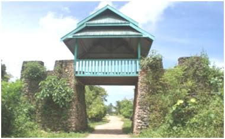

Wisata Sejarah Benteng Wapala
Berlokasi di Bangkudu, Kulisusu, Kabupaten Buton Utara, Sulawesi Tenggara. HTM Rp 10.000/orang. Benteng ini buka 24 jam dari Senin-Minggu. Dulunya benteng ini dijadikan sebagai tempat pertahanan dari penjajah dan bajak laut, kini benteng ini ditetalkam sebagai cagar budaya daerah.
Dahulu kala dibangunnya benteng ini hanya menggunakan batu dan putih telur, agar susunan batu tersebut kuat dan rapi